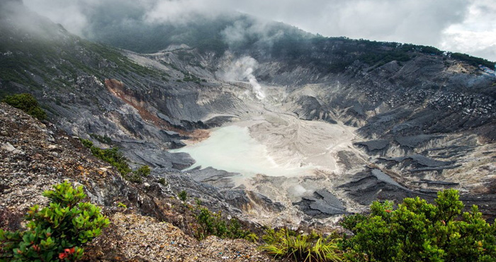

Candi Borobudur adalah candi Buddha terbesar di dunia, dibangun pada abad ke-8 hingga ke-9 M oleh Dinasti Syailendra. Candi ini memiliki struktur bertingkat yang menggambarkan kosmologi Buddha Mahayana dan berfungsi sebagai tempat ziarah penting.
◎ Lokasi: Magelang, Jawa Tengah, Indonesia
◎ Koordinat Geografis: -7.607874, 110.203751